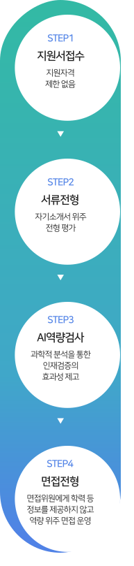

지속가능경영
Social
- 구성원 성장
-

동부건설은 기술과 비즈니스가 빠르게 변화하면서 발생되는 Skill Gap을 줄이기 위하여 기존 직무능력을 강화하는 Up-Skill과 새로운 분야를 배양하는 Re-Skill에 대한 니즈 증대에 맞추어 구성원들의 성장을 지원하고 있습니다. 구성원의 역량강화와 일과 학습의 병행(Work Flow Learning)을 통한 성과창출 연계의 중요성을 인지하고 있으며 <Learning Journey Process>를 도입하였습니다.
내부핵심인재 육성 리더역량 강화 리조직문화 내재화 및 심화 - 경력개발 프로그램(CDP) 활성화
- 사업별 전문인력 육성제도 도입
- 현장소장 역량 강화교육 운영
-
직급별, 경력단계별 리더 양성체계 수립
- 정기적 리더파이프라인 구축
- 신규 입사자에 대한 조기적응 및 전력화
- 사원급 Follow-Up 교육
- 조직문화 내재화 교육과정 확대
운영 프로그램
구분 목적 대표 프로그램 조직문화 함양 - 직장인으로서의 의식함양과 조기정착 유도(신입사원 대상)
- 신규 입사자의 조직문화 체득 및 사내 네트워크 강화
- Follow-Up 교육
- 신입사원/경력사원 입문교육
리더역량 - 책임감의 중요성 이해
- 업무관리역량 제고
- 셀프/관계 리더십 과정
- 코칭 및 성과관리 리더십 과정
직무역량 - 직무만족도 및 몰입도 제고
- 구성원 역량개발을 통한 조직성과 극대화
- 경력개발 프로그램(CDP)
- 소장역량 강화과정
전략인재 육성 - 사업운영에 필요한 전략적인 인재 양성을 통한 경쟁력 확보
- 전문인력 육성을 통한 지식/성과 전파
- 전문분야 석사학위 취득과정
- 해외사업 전문인력 육성제도
교육 만족도
구분 2021년 2022년 온라인교육 4.7점 4.8점 입문교육 - 4.0점 온라인교육 - 4.6점 ※ 온라인교육 外 교육만족도 조사는 2022년부터 실시하였습니다.
교육훈련비용
구분 2020년 2021년 2022년 금액(천원) 137,557 170,430 292,651
구성원 다양성
동부건설은 새로운 도전을 두려워하지 않는 창의성, 불굴의 의지로 미래를 개척해 나아가는 열정,
고객과 사회에 선한 영향력을 끼치는 정직과 신뢰를 핵심가치로 하여 지역사회의 다양한 인재를 채용하고 있습니다.
학력, 연령, 성별, 장애여부 등에 대한 차별이
채용의 공정성에 영향을 미치는 행위를 지양하고 있습니다. 
건설업은 전통적으로 남성 위주의 산업이라는 인식이 강하였으나, 동부건설은 이러한 고정관념에서 탈피하여
성별에 의한 차별이 없는 인사정책과 현장 근무환경 조성 등을 통해 양성평등의 가치를 실현하고자 노력하고 있습니다.
동부건설은 기업의 사회적 책임인 양질의 일자리 창출을 지속적으로 늘려 나가기 위해 노력하고 있습니다.
이를 위해 정규직, 기간제 근로자 간의 차별적 처우를 지양하고, 기업의 성장과 구성원과의 상생을 통해 발전하는 동부건설이 되겠습니다.

- 구성원 화합
-
노사의 화합
동부건설은 ‘노사가 화합하는 행복한 직장‘ 이라는 슬로건 아래, 동료애가 넘치는 직장 만들기에 앞장서고 있습니다.
매 분기별 노사협의회를 실시하여 직원들의 다양한 의견을 청취하고, 지속적인 직원 복리증진을 위해 노력하고 있습니다.노사협의회 운영 실적
구분 2021년 2022년 개최 횟수 4회 4회 주요 협약실적 - 지원 학자금 지급기간 확대
- 식대 및 이사비 지원금액 인상
- 가정의 달 복지포인트 지급 신설
- 기타 수당의 지급금액 개선
안정적인 가정을 위한 건강한 복지지원동부건설은 임직원의 건강이 곧 가정의 화목으로 이어진다고 생각합니다.
이를 위해 구성원은 물론, 구성원 가족의 건강한 삶을 지원하고 있습니다.- 01
- 임직원 및 배우자 건강검진 지원
-
동부건설은 임직원의 배우자도 동일한 건강검진
혜택을 받을 수 있도록 지원하고 있습니다.
- 02
- 의료비 지원
-
동부건설은 구성원의 건강한 삶을 지원하기 위해
일정 한도의 의료비를 지원하고 있습니다.
- 03
- 단체 상해보험 보장내용 확대
-
동부건설은 직원 단체상해보험의 보장금액 및 보장 범위가
매년 점진적으로 확대 적용될 수 있도록 노력하고 있습니다.
- 04
- 기타 지원
-
자녀를 둔 임직원에 입학축하금과 학자금, 전 임직원에
난임치료 휴가지원, 가정의 달 복지포인트 등을 지원하고 있습니다.
구성원이 걱정 없이 업무에 집중할 수 있는 가족 친화적 환경을
조성하기 위해 구성원에 대한 복리후생 지원을
지속적으로 개선해 나가겠습니다.
동부건설은 출산율 감소, 여성의 경력 단절 등의 사회적 문제해결과 구성원이 걱정없이 업무에 집중할 수 있는 환경을 만들고, 임직원이 원하는 기간에 휴가를 사용할 수 있도록 최대한으로 배려하려고 노력하고 있습니다.
출산휴가 및 육아휴직 현황
구분 2021년 2022년 출산휴가를 사용한 근로자 수 남성 1명 - 여성 1명 3명 소계 2명 3명 출산휴가 종료 후 복귀율 비율 100% 100% 육아휴직을 사용한 근로자 수 남성 4명 5명 여성 - 5명 소계 4명 10명 육아휴직을 사용 후 복귀자 수 남성 7명 1명 여성 1명 1명 소계 8명 2명 육아휴직 사용 후 복귀율 비율 100% 100%